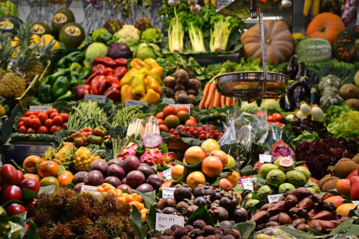
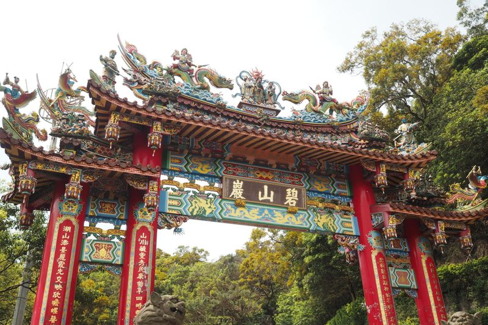

导航

怎么玩更省心
每篇攻略都写清了交通方式、时间分配、实际花费和容易踩的坑 —— 不用自己拼凑信息，照着走就行。
 8 分钟
8 分钟
第一次去黄磜：一日采茶线怎么走
早上采茶、中午茶宴、下午逛茶园 —— 把最适合新手的三个环节串成一天。 含交通方式、每个环节的实际耗时，以及为什么强烈建议自驾。
 11 分钟
11 分钟
两日红色茶旅研学：三个旧址加一片茶园
专为学校与单位团队写的两日议程。第一天走高群县委旧址与黄沙坑抗日指挥部， 第二天上午梁坝抗战学校，下午转营盘高山茶园 —— 严肃与放松各占一半。
 7 分钟
7 分钟
全年摄影时间表：什么时候来拍什么
按月份排的机位清单 —— 3 月茶田晨雾、6 月竹林绿意、11 月红叶、1 月樱花。 每段都标了最佳时段与光线方向，附各机位的步行距离。

6 分钟买什么带回去：黄磜土产价格对照表
佛手瓜、乌龙茶、红茶、香芋、西瓜、月饼、蛋黄酥、酱菜 —— 八样土产的当地参考价一次列清，附上哪几样适合长途带、哪几样别买多。
 9 分钟
9 分钟
带孩子去黄磜：两天怎么安排不折腾
小朋友坐不住长车程，所以住宿一定要选在体验点附近。这份安排把每天的车程 压到 40 分钟以内，中间留足午睡时间。

10 分钟三日禅茶康养：把节奏彻底放慢
住西莲山寺客舍，早起随早课，白天抄经喝茶。三天里只安排一次外出， 其余时间都在山上 —— 适合真正想休息的人。
 5 分钟
5 分钟
汉服旅拍避坑：造型、时机与机位
宋制还是明制？深色还是浅色？茶田的绿背景下哪些颜色会糊成一片？ 这份清单把选衣、妆容和时段三个最容易翻车的点说清楚。
4 分钟
怎么到黄磜：自驾、高铁、客运全对比
从广州、韶关、深圳三个方向出发的实际用时与路线。也说清楚为什么 到了镇上之后，没车会很不方便。